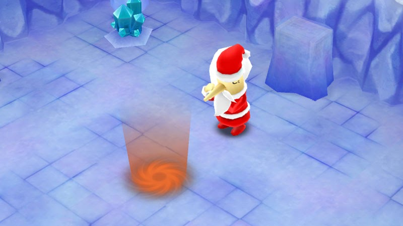
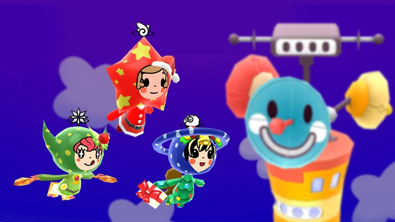
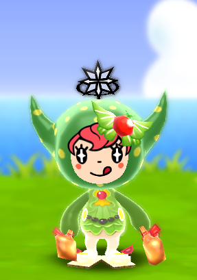
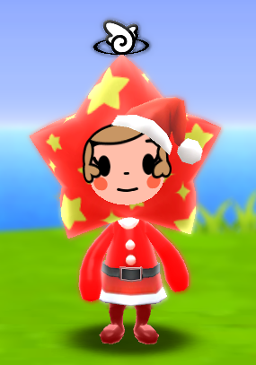
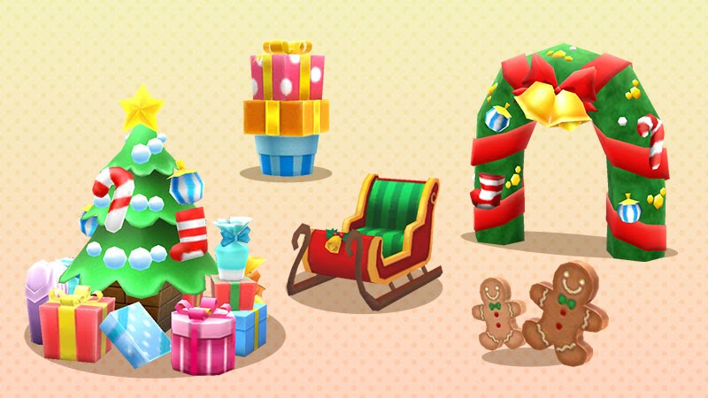
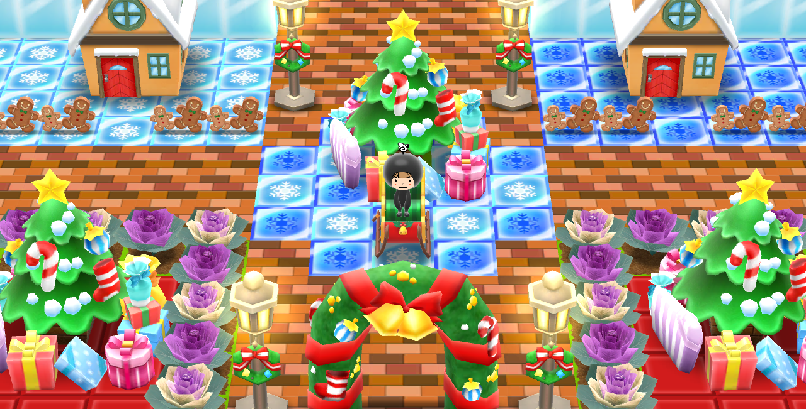
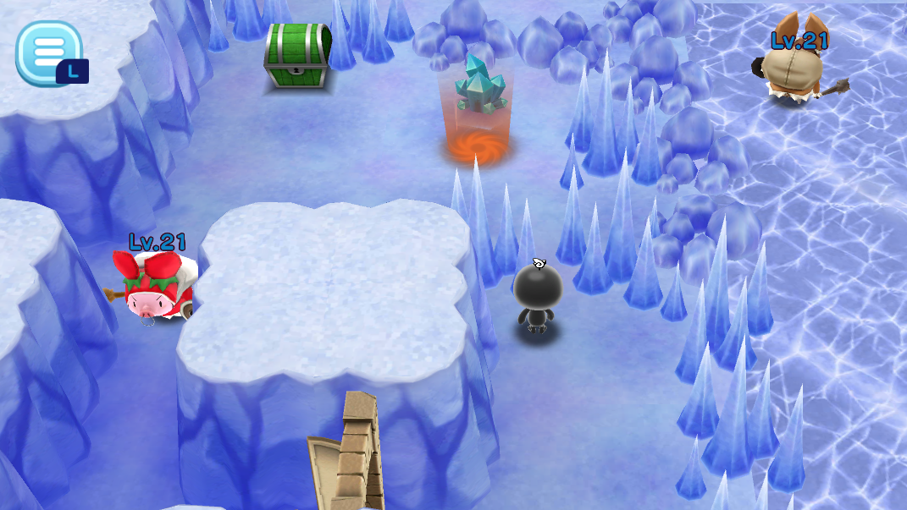

クリスマスイベント開催
『New 電波人間のRPG FREE！』
クリスマスイベント開催！
12月10日より、クリスマスイベントを開催します。 イベントはメイン1のステージをクリアするとオープンします。
① イベントキャッチ
： 12月10日（火）15時00分 ～ 12月24日（火）14時59分 ② イベントショップ
： 12月10日（火）15時00分 ～ 12月24日（火）14時59分 ③ イベントステージ
： 12月17日（火）15時00分 ～ 12月24日（火）14時59分
クリスマスイベント開催！
12月10日より、クリスマスイベントを開催します。 イベントはメイン1のステージをクリアするとオープンします。
① イベントキャッチ
： 12月10日（火）15時00分 ～ 12月24日（火）14時59分 ② イベントショップ
： 12月10日（火）15時00分 ～ 12月24日（火）14時59分 ③ イベントステージ
： 12月17日（火）15時00分 ～ 12月24日（火）14時59分


イベントキャッチ
イベント限定の特別な電波人間をキャッチすることができます。 今回はクリスマスをテーマにした電波人間たちが島にやってきます。


メリー
サンタガールの装備をつけたメリー みんなふっかつのアンテナを持っています

リース
クリスマスディナーの装備をつけたリース 氷属性の全体攻撃アンテナを持っています

スズ
クリスマスパーティーの装備をつけたスズ みんなねむらせるのアンテナを持っています
イベントキャッチは開催期間中に1回ずつキャッチすることができます。 1度キャッチした電波人間は、期間内に再登場することはありません。
イベントショップ
イベント限定のデコレを販売します。 今回はクリスマスをテーマにしたデコレが登場します。


イベントステージ
12月17日から、イベント限定のステージ 「迷えるサンタは今どこに？」 がオープンします。 洞窟から出られなくなってしまったサンタさんを救出に行きましょう！
洞窟の中は仕掛けがいっぱい。道に迷ったら水晶の色に注目してください。 ステージに対応するあかしコレクションもありますよ。 コンプリート報酬の受け取りはステージが開催されている間だけなのでご注意ください。
イベントステージは1日3回まで挑戦できます。
【イベント期間】 イベントキャッチ・イベントショップ：12月10日 15時00分 ～ 12月24日 14時59分 イベントステージ：12月17日 15時00分～12月24日 14時59分
ぜひ、お楽しみください！
